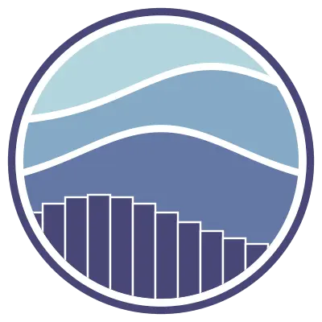
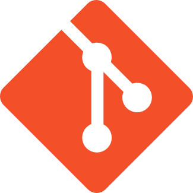
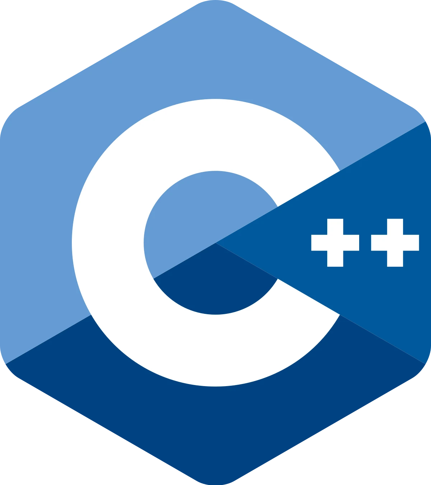
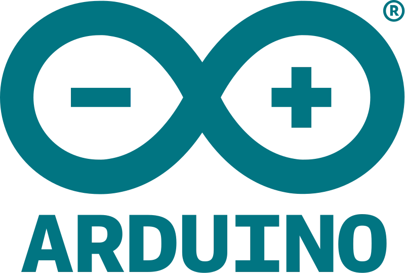

Hey, I am Isai Jesús
Exploring technology to drive meaningful change 🚀
Software Engineer specializing in Data Science and Frontend Web, Future-focused developer passionate about research and crafting technology that makes a difference.
About
I'm 20 years old.
My love for coding began at a young age, wanted to create all kinds
of applications.
Enjoy participating in challenges that help me acquire knowledge and
new experiences.
I've participated in several
Informatics Olympiads and
Hackathons
at the
state and national level. 🏆
Currently, studying Software Engineering with a specialization in Data Science and autonomously reinforcing topics in Machine Learning and Frontend Web Development developing my own projects. 📊
I enjoy participating in research and entrepreneurship projects, especially those focused on innovative technologies, sustainability, and solving real-world problems. 🍃 Collaborating with peers on these projects has allowed me to enhance my teamwork and leadership skills while contributing to meaningful outcomes.
Passionate about diverse development projects, with a focus on Frontend Web and Data Science. I've developed projects in different areas of programming such as Frontend, Backend, Mobile, Algorithms, and Robotics.
Outside of coding, I'm a sports enthusiast. 🦾
Experience
-
Startup Weekend
May 2024
Won the first place in Startup Weekend Morelos, where we developed a sustainable product.
A drywall made from mycelium and agricultural waste. -
InnovaTecNM
November 2023
Managed to advance from the regional stage to the national stage of an innovation event.
I played the role of frontend, making an important contribution to my team. -
ICPC Mexico
October 2023
Advanced to the national phase in an international competition of algorithms.
Made history as the first team of my university to reach this advanced stage, recognized as the best in my state. -
Hackathon
September 2022
Won the third place in a hackathon "HackaTec", in which we created an AI with linear regression, where I primarily lead and work as a team. I secured an internship with the BeeckerCo company.
-
ORDEEM
May 2021
Created a delivery app for local businesses, which served me to learn how a small company works, and in the same way, I learned the fundamentals of web programming with React JS.
-
OMRI
November 2020
Participated and won a bronze medal in a state programming contest called OMRI in the C++ language, where I solved programming logic problems on the OmegaUp platform.
Web Projects


Data Science Projects
Skills
Frontend
 HTML
HTML CSS
CSS- JavaScript
-
 TypeScript
TypeScript
 React JS
React JS Next JS
Next JS Redux
Redux Astro
Astro- SASS
-
 Bootstrap
Bootstrap
- Tailwind
Backend
 Node JS
Node JS Express JS
Express JS MongoDB
MongoDB PostgreSQL
PostgreSQL- MySQL
 Django
Django PHP
PHP
Data Science (Learning)
- Python
- Jupyter Notebook
- Pandas
- Numpy
- Matplotlib
- Seaborn
 Scikit Learn
Scikit Learn
Other
- Git
- C++
 Linux
Linux AWS
AWS- Java
- Flutter
- Arduino